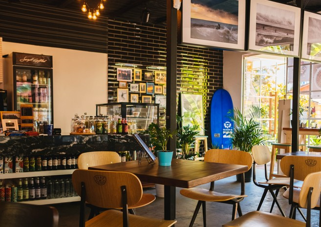
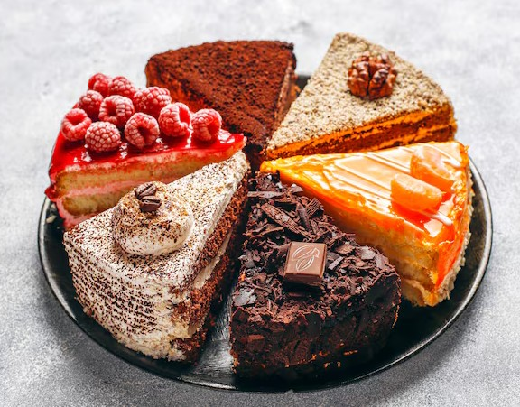

Über uns
Das Café Stolberg ist ein gemütliches Café im Herzen der historischne Altsadt. Bei uns können Gäste in Ruhe Kaffee trinken, frühstücken und hausgemachten Kuchen genießen
Wir verwenden frische Zutaten und achten auf einen freundlichen Service. Unser Café ist ein Treffpunkt für Familien, Freunde und alle, die gerne eine kleine Pause machen möchten

Unsere Speisekarte
Unsere Speisen und Getränke werden frisch zubereitet. Wir bieten süße und herzhafte Gerichte für verschiedene Geschmäcker an
| Gericht | Beschreibung | Preis |
|---|---|---|
| Cappuccino | Espresso mit cremigem Milchschaum | 3,20 € |
| Frühstück Stolberg | Brötchen, Käse, Marmelade und ein Ei | 8,90 € |
| Hausgemachter Käsekuchen | Cremiger Kuchen mit frischen Beeren | 4,50 € |
| Avocado-Toast | Geröstetes Brot mit Avocado und Tomaten | 7,50 € |
| Schokoladenkuchen | Saftiger Kuchen mit Schokoladenglasur | 4,20 € |

Angebote und Besonderheiten
Neben unserer normalen Speisekarte bieten wir regelmäßig besondere Aktionen und saisonale Spezialitäten an
- Frühstücksangebot am Samstag und Sonntag
- Hausgemachte Kuchen und Torten
- Vegetarische und vegane Speisen
- Frisch gemahlener Kaffee
- Kostenloses WLAN für unsere Gäste
So funktioniert die Reservierung
- Wählen Sie einen gewünschten Tag aus
- Rufen Sie uns an oder schreiben Sie eine E-Mail
- Wir bestätigen Ihre Reservierung
Öffnungszeiten und Kontakt
Wir freuen uns auf Ihren Besuch im Café Stolberg. Bei gutem Wetter können unsere Gäste auch draußen sitzen
Öffnungszeiten
Montag bis Freitag: 08:00–18:00 Uhr
Samstag und Sonntag: 09:00–19:00 Uhr
Adresse
Burgstr. 1
52222 Stolberg
Weitere Informationen über Cafés finden Sie auf der externen Informationsseite über Cafés .